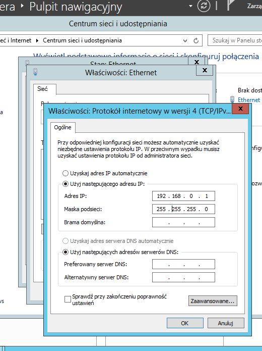
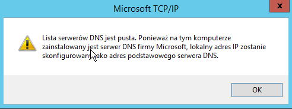
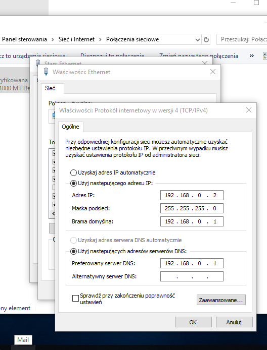
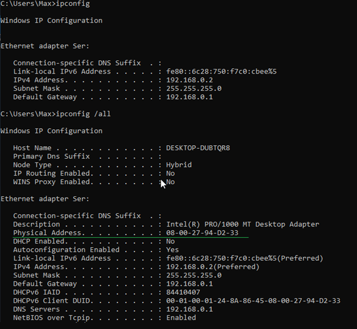
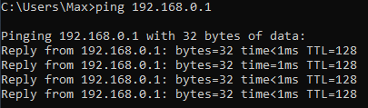

ADMINISTRACJA SYSTEMAMI OPERACYJNYMI / Interfejs sieciowy
Strona Główna
Podstawa to poprawna konfiguracja kart sieciowych na VB (VirtualBox).Polecam dać “sieć wewnętrzna” w zakładce sieci na obu maszynach. Pamiętaj aby na obu maszynach wyłączyć zaporę sieciową.
Panel sterowania > Sieći internet > Centrum sieci i udostępniania > Zmień konfigurację karty sieciowej
(Domyślna nazwa interfejsu sieciowego to ethernet. Aby ją zmienić kliknij prawym przyciskiem myszy na kartę sieciową "ethernet" i wybierz opcję zmień nazwę)
2 razy na ethernet > właściwości > 2 razy na Protokół internetowy w wersji 4 (TCP/IP)
zaznacz check box Użyj następującego adresu IP:  Ta konfiguracja sprawi że serwer będzie robił za tymczasowego DNS`a.
Czasem pojawi się o tym taka informacja.  Więc na kliencie podasz adres serwera jako bramę domyślną oraz jako DNS.  Teraz weryfikujemy czy komunikacja jest poprawna.
Uruchom wiersz poleceń CMD. Komenda ipconfig pokaże ci podstawową konfigurację interfejsu sieciowego.
Natomiast ipconfig /all da ci wszystkie informacje o karcie sieciowej gdzie naprzykład:
"Host Name" to nazwa hosta.
"Physical Address" jest to address MAC przydatny do konfiguracji konkretnego urządzenia.  Aby sprawdzić czy serwer wraz z klientem się "widzą" wykonaj ping
Taki wynik informuje cię o poprawnym przesyłaniu pakietów między komputerami. 